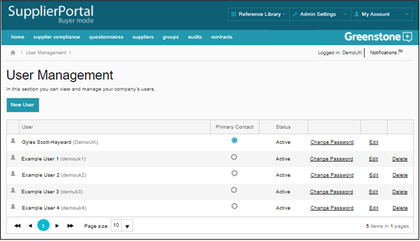
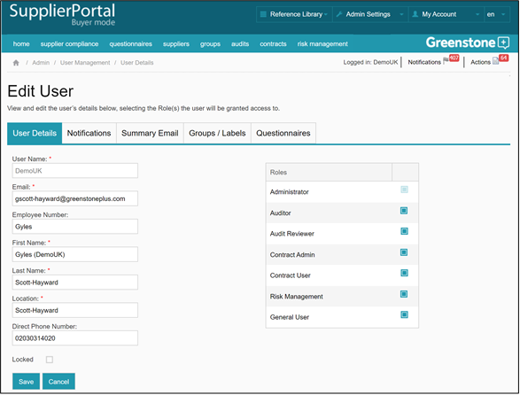

On the User Management page, you can edit current users, delete users, change passwords and add new users by clicking “New User”. There is no limit to the numbers of users you can add.

When creating new users, or editing current users, you can define their access rights within Supply-Chain Sustainability (SCS).

When editing a user, you are also able to define the notifications for them to receive. This is done by selecting the notifications types they wish to receive (notifications tab), the groups and / or labels they wish to receive supplier notifications for (group / labels), and the questionnaires they want the notifications to relate to (questionnaires).